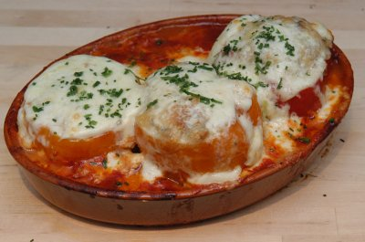

| Zutaten für 4 Personen: | |
| 4 | rote Peperoni |
| 2 | altbackene Brötli |
| 150 g | Mozzarella |
| 350 g | gehacktes Rindfleisch |
| 2 | Eier |
| 1 | Knoblauchzehe |
| 750 g | Tomaten |
| 150 g | Zwiebeln |
| 3 El | Öl |
| Schnittlauch | |
| Salz | |
| Pfeffer | |
Von den Peperoni einen Deckel abschneiden, Schoten waschen und reinigen.
Brot in Wasser einweichen.
Schnittlauch in Röllchen schneiden, 1 Esslöffel davon wegstellen.
Mozzarella in Scheiben schneiden, 4 davon aufheben, den Rest würfeln.
Fleisch mit den ausgedrückten Brötchen vermischen, Schnittlauch, Käse und Eier dazugeben und kneten.
Mit durchgepresster Knoblauchzehe und Pfeffer würzen und in die Peperoni einfüllen.
Tomaten schälen, vierteln und von den Kernen befreien.
Ofen auf 200°C vorheizen.
Zwiebeln in dünne Ringe schneiden und im Öl glasig dünsten.
Tomaten zugeben und mit Salz und Pfeffer würzen.
In eine feuerfeste Form geben, Peperoni darauf stellen und zugedeckt im vorgeheizten Ofen auf 200°C 30 Minuten garen.
Nun auf jede Peperoni 1 Scheibe Mozzarella legen, Hitze auf 225°C erhöhen und nicht zugedeckt weitere 10 Minuten überbacken. Mit Schnittlauch bestreuen.
Beobachter, 20/89
Getestet von RE im Jan '96. War nicht speziell aber die Zwiebel/Tomaten Beilage war super!
Am 24.2.2008 zubereitet und es hat mir diesmal sehr gut geschmeckt. RE.